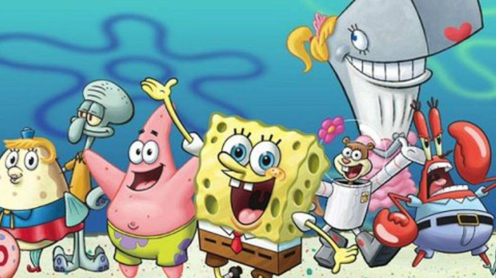

Bob Esponja (en inglés, SpongeBob SquarePants) es una serie de televisión de dibujos animados estadounidense creada por el animador, caricaturista y biólogo marino Stephen Hillenburg (1961-2018) para la cadena Nickelodeon, estrenada el 1 de mayo de 1999 (con un piloto estrenado a finales de 1998). Es producida por su compañía, United Plankton Pictures. Es la 12° serie animada de Nickelodeon y la más larga del canal y a la vez es una de las series estadounidenses de dibujos animados de mayor duración.
La serie narra las aventuras y los esfuerzos de Bob Esponja y sus diversos amigos en la ficticia ciudad submarina de Fondo de Bikini. Es la quinta serie animada estadounidense de más larga duración, su popularidad la ha convertido en una franquicia, así como la serie con la cuota de pantalla más alta jamás emitida en Nickelodeon, y la propiedad más distribuida de ViacomCBS Domestic Media Networks. A finales de 2016, la franquicia de medios generó $13 mil millones de dólares en ingresos de comercialización para Nickelodeon.

Bob Esponja: Es el protagonista de la serie del mismo nombre. Es una esponja amarilla y cuadrada que ríe demasiado, el y Patricio molestan a Calamardo sin intención, ama trabajar en el Crustáceo Crujiente, hacer cangreburgers, cazar medusas en el campo de medusas y hacer pompas de jabón con Patricio, cuidar de Gary, trata de obtener su licencia de conducir pero casi siempre falla y le gusta practicar karate con Arenita. La casa de Bob Esponja es una piña. Es gran admirador de Sirenoman y Chico Percebe.
Patricio Estrella: Es una estrella de mar rosada, su mejor amigo es Bob Esponja, vive debajo de una piedra y es muy holgazán. Es amable, pero también llega a ser egoísta, grosero, malcriado, agresivo o rudo y presenta una clara estupidez aunque sabe manejar. Al igual que Bob Esponja molesta a Calamardo sin intención y es admirador de Sirenoman y Chico Percebe.
Calamardo Tentáculos: es el vecino amargado de Bob Esponja y Patricio; toca el clarinete y odia casi todo a su alrededor y es un Pulpo a pesar de que su nombre de la impresión de que es un Calamar. Su rival, Calamarino Elegante, es el centro de atención, cosa que Calamardo nunca pudo lograr. A pesar de que si se esfuerza en ser un gran artista ningún habitante de Fondo de Bikini no lo toman en serio y se burlan de él sin razón alguna. Es junto con Arenita y Plankton el tercer personaje más inteligente de la serie.
Eugene H. Cangrejo (Don Cangrejo): Es el jefe de Bob Esponja y Calamardo, es avaro, tacaño y amante del dinero y es un cangrejo. Dueño del Crustáceo Cascarudo y vive en un ancla con su hija Perlita. También se sabe que ha arruinado las fiestas de cumpleaños de Perlita. Posee una de las fortunas más grandes en todo Fondo de Bikini. Es enemigo de Plankton aunque antes eran amigos en la infancia pero su amistad con Plankton pasó a enemistad por la fórmula secreta de las cangreburgers. Esta enamorado de la Señora Puff.